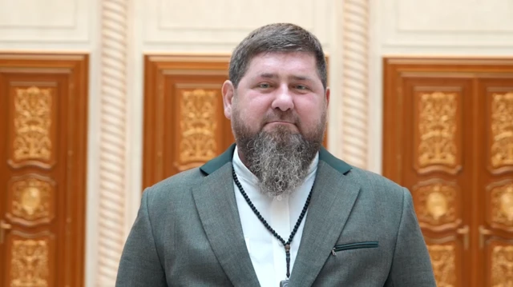

Warlord. Governor. Chief TikTok propagandist of the war.

Chechen warlord-turned-governor and Kremlin propaganda instrument.
Born into the family of Akhmad Kadyrov — a religious leader and separatist commander. Grew up in inter-war Grozny. He was a teenager fighting on the separatist side during the First Chechen War.
Participates in the First Chechen War alongside militants. His father gradually changes position, finding common ground with Moscow. The Kadyrov family becomes the key broker between the Kremlin and Chechnya.
During the Second Chechen War, Akhmad Kadyrov openly switches to the federal side. Ramzan follows his father. Putin appoints Akhmad head of the Chechen administration.
Akhmad Kadyrov is killed by a bomb at a Grozny stadium. Ramzan is 27. He takes control of the republic's security forces, systematically eliminating rivals. Human rights groups document hundreds of cases of torture and forced disappearances.
Too young under the constitution at 23. Waits, then is appointed by Putin. Builds a personality cult: portraits in every institution, the "Kadyrovtsy" — his personal army.
Sends Chechen "Akhmat" battalions to Ukraine. His Telegram channel becomes a daily war broadcast: videos with fighters, threats, prayers. Western analysts note significant gaps between his claims and actual battlefield involvement.
Kadyrov builds the image of the "loyal vassal" — absolutely obedient, ready for any brutality. His propaganda is directed inward: at Chechnya and at Russian audiences, to whom he demonstrates "fighting spirit" and devotion to Putin. His Telegram channel is a personal media weapon: videos of prayer, training, threats. An effective mix of Islamic imagery, military aesthetics, and personal loyalty to the leader. Interp.
Added to the US Magnitsky Act sanctions list in 2020 for involvement in gross human rights violations. In 2023, the European Union introduced personal sanctions in connection with the war in Ukraine.
All claims in this dossier are based on open public sources. Facts marked Fact have direct primary sources. Marked Interp. are editorial assessments of documented events.